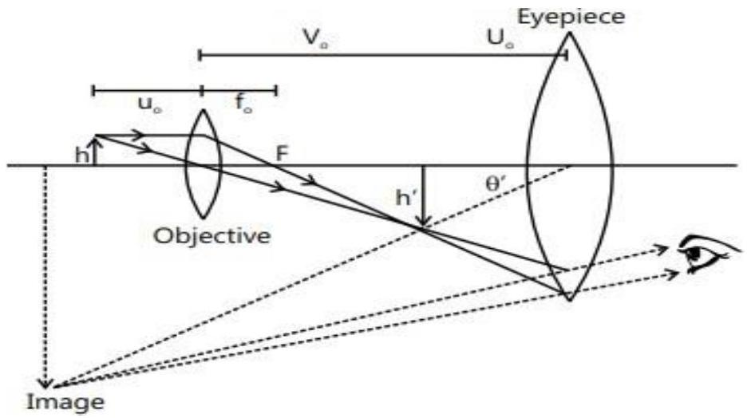

CHAPTER 2
GEOMETRICAL OPTICS
2.1 INTRODUCTION
Light is a form of radiant energy; energy emitted by the excited atoms or molecules that can cause the sensation of vision by a normal human eye.
The branch of physics that deals with the phenomena of light is called optics. There are two branches of optics
(a) Physical optics and (b) Geometrical w optics.
2.2 SOME DEFINITIONS
- Ray: The 'path' along which the light travels is called a ray. The rays are represented by straight lines with arrows directed towards the direction of travel of light.
- Beam: A bundle of rays is called a beam. A beam is parallel when its rays are parallel, it is divergent when its rays spread out from a point, and it is convergent when its rays meet at a point.
- Object and image
If the rays from a point on an object actually diverge from it and fall on the mirror, then the object is the real object of the mirror. If the rays incident on the mirror does not start from a point but appear to converge at a point, then that point is the virtual object of the mirror.
If the rays converge at a point after an interaction with a surface, then a real image will be formed, and if the rays diverge after an interaction with a surface, a virtual image will be formed.
Real object, real image, , virtual object virtual image:
In Fig. 1.2 (a), the object is real, while the image is virtual. In Fig. 1.2 (b), the object is virtual, while the image is real.
2.3 REFLECTION OF LIGHT
Definition
When the light falling on a surface turns back into the same medium, it means it is reflected. The angle made by the incident ray with the normal to the reflecting or refracting surface is called the angle of incidence, and the angle made by the reflected or refracted ray with normal is called the angle of reflection or refraction.
- Laws of Reflection
- When the incident ray, the reflected ray and the normal to the reflecting surface at the point of incidence all lie on the same plane. It is called the plane of incidence.

b) The angle of incidence is equal to the angle of reflection
$\angle \mathrm{i}=\angle \mathrm{r}$.
The deviation is defined as the angle between the directions of the incident ray and the reflected ray (or the emergent ray). It is generally denoted by $\delta$.
2.4 Types of mirrors
- Plane mirror
- Spherical mirrors
i. Concave mirrors
ii. Convex mirrors.
- Reflection from a plane surface (or plane mirror)
Almost everybody is familiar with the image formed by a plane mirror. If the object is real, the image formed by a plane mirror is virtual, erect, of same size of the original object and in the same distance from the mirror.

If an object is placed in front of a mirror as shown in Fig. 1.6, we get its image in the mirror due to the reflection of light.
Characteristic of image formed by plane mirror.
- The distance between the object and the mirror = the distance between the image and the mirror.
- The line joining the object point with its image is normal to the reflecting surface.
- The image is laterally inverted (left-right inversion).
- The size of the image is same as that of the object.
- For a real object, the image is virtual, and for a virtual object, the image is real.
- For a fixed incident light ray, if the mirror is rotated by an angle $\theta$, the reflected ray turns through an angle $2 \theta$. If plane mirror is rotated through about an axis perpendicular to plane of mirror, then the reflected ray image spot does not rotate.
- Spherical mirrors
A spherical mirror is a smooth reflecting surface that forms a part of a spherical surface. If reflection takes place from the inner reflecting surface, then the mirror is called a concave mirror. If the reflection takes place from the outer surface, it is called a convex mirror. The reflection of a light from a concave and a convex mirror is shown in the Fig. 1.21.
Concave Mirror
- Parameters Associated with the Spherical Mirror
- A pole (P) or vertex is the geometrical center of a reflecting surface.
- Center of curvature C is the center of the sphere, of which the mirror is a part. Radius of curvature R is equal to the distance between P and C of the mirror and is the radius of the sphere, of which the mirror is a part.
- The principal axis is the line CP that passes through P and C. If a ray of light is emitted from an object at infinity so that the beam of light is parallel to the principal axis, an image is formed at principal focus F after reflection.
- Focal length, f , is the distance between P and F along the principal axis. When a beam of light is incident parallel to the principal axis, the reflected rays converge on F in a concave mirror and diverge from F in a convex mirror after reflection.
- Aperture of a spherical mirror is the effective diameter MM' of the light-reflecting area in the mirror. When the aperture of a mirror is small, the focal length is equal to half the radius of curvature.
2.5 Rules for Image Formation
The following rules are used for locating the image of an object by considering the reflection of three types of rays
based on laws of reflection:
- A ray incident parallel to the principal axis will pass through the principal focus after reflection in the case of
- a concave mirror and will appear to originate from the focus in the case of a convex mirror.
- A ray that passes through the principal focus of a concave mirror, or that passes toward the principal focus of
- a convex mirror, travels parallel to the principal axis after reflection.
- A ray that passes through the center of curvature of a concave mirror or toward the center of curvature of a
- convex mirror is reflected from the mirror along the same path.
| S. No. | Position Object | Diagram | Position of Image | Nature of Image |
|---|---|---|---|---|
| 1 | Infinity |  |
At the principal focus F or in the focal plane Image problem | Real, inverted and diminished |
| 2 | Between infinity and C |  |
Between F and C | Real, inverted and diminished |
| 3 | C |  |
C | Real, inverted and of same size as the object. |
| 4 | Between F and C |  |
Between C and infinity | Real, inverted and magnified |
| 5 | At F or in the focalplane | At infinity | Real, inverted and highly magnified | |
| 6 | Between F and P |  |
Behind mirror | Virtual, erect and magnified. |
2.6 Image Formation by a Convex Mirror
An image is formed between the pole and the focus for all thepositions of the real object except when the objects are at infinity in which case the image is formed at F in the focal plane. The image formed is virtual, erect and diminished. The ray diagram for the formation of image I of object 0 after reflection from a convex mirror is shown in the Fig. 1.29
Mirror Formula
If an object is placed at a distance u from the pole of a mirror, its image is formed at a distance v from the pole, and its focal length f is given by
where $\mathrm{f}=\mathrm{R} / 2$ (only for paraxial rays). According to the sign conventions, f and R are negative for a concave mirror and are positive for a convex mirror. The power of a mirror, P , measured in units of dioptres is given by $p=-{ }_{\vec{f}}^{1}$ Where f is in metres $p=-\frac{{ }^{100}}{f}$ Where f is in centimetres.
Example 5:
A convex mirror has a radius of curvature of 20 cm . Find the position of the image of an object placed at a distance of 12 cm from the mirror.
Sol:
The position of the image is found using formula
The positive sign of v shows that the image is formed on the right side of the mirror and is a virtual image
2.7 Refraction of light and laws of refraction
- The deviation or bending of light rays from their original path while travelling from one medium to another is called refraction.
- If the refracted ray bends away from the normal, then the second medium is said to be RARER as compared to the first medium, and the speed increases.
2.7.1 Refraction through a Transparent Sheet
Let the ray is incident at face AB. Apply the Snell's law at faces AB and CD.
The incident ray and emerging ray are parallel. It shows that the deviation of ray is not affected by the refractive
index of the sheet; it depends by $\mu_{1}$ and $\mu_{3}$. $\mu_{2}$ only causes lateral displacement which is given by
At a glance:
Example
The refractive index of glass with respect to water is (9/8) and the refractive index of glass with respect to air is (3/2). Find the refractive index of water with respect to air.
Sol:
The refractive index of medium one with respect to medium two is given by . $\mu_{2}=$
To find the refractive index of water with respect to air, we need to obtain the ratio between
Given $\quad w \mu_{g}=9 / 8$ and $a \mu_{g}=3 / 2$.
2.7.2 Total internal reflection
The angle of incidence for which angle of reflection is 90 .
Example :
A point source of light is placed at the bottom of a tank filled with water up to the level of 80 cm . Find the area of the surface of water through which light from the source emerges out. Assume that the refractive index is equal to 1.33 .
Sol:
When light travels from a denser medium (water) to the rarer medium (air) for angle of incidence i greater than critical angle, than by Snell's law we get $1 \operatorname{Sin} C=\frac{1}{n}$
Let the light emerges out of a circular area of radius r as shown in the figure.
O (Source of light)
Step 1
Using $\operatorname{Sin} C=\frac{1}{n}$
Step 2.
From $\triangle \mathrm{POR}$,
Power of an Optical Instrument
By the optical power of an instrument (whether it is a lens, mirror or a refractive surface), we measure the ability of the instrument to deviate the path of rays passing through it. If
the instrument converges the rays parallel to the principal axis, its power is positive, and if it diverges the rays, it is a negative power.
P (in dioptre)
2.8 Dispersion of light
When a beam of white light that consists of spectrum of various wavelengths D B C R O Y G B I V Figure 16.90 ranging from long wavelengths in red color to short wavelengths in violet color passes through a prism, it is split into its constituent colors. This phenomenon is called dispersion. The dispersion of light takes place because the refractive.
index $\mu$ of a medium depends upon the wavelength $\lambda$ of light according to the
2.8.1 Dispersive Powers
The ratio of the angle of dispersion to the angle of deviation of the mean yellow color, $\delta$, of the ray produced by any prism is called the dispersive power $\omega$ of the material of the prism.
where $v \mu, R \mu$ and $\mu$ are the refractive indices of violet, red and mean yellow colors respectively.
2.9 OPTICAL INSTRUMENTS
Optical instruments are used to assist the eye in viewing an object. Let us first discuss about the human eye and the mechanism through which we see
1. The Eye
The eye has a nearly spherical shape of diameter 1 inch each. Following are some of the terms related to the eye.
- Cornea - The front portion of the eye is more sharply curved and is covered by a transparent protective membrane called the cornea.
- Aqueous humor - Behind the cornea, there is a space filled with a liquid called aqueous humor.
- Crystalline lens - The part just behind aqueous humor is called crystalline lens.
- Iris - It is the muscular diaphragm between theaqueous humor and lens and is the colored part that we see in the eye.
-
Pupil - The small hole in the iris is called the pupil.Varying aperture of the pupil controls the amount of
light entering into the eye with the help of iris. - Retina - This is a screen-like structure on which the eye forms an image. The retina contains rods and cones that receive light signal.
- Accommodation - When the eye is focused on a distant object, the ciliary muscles are relaxed so that the focal length of the eye lens has its maximum value that is equal to its distance from the retina. The parallel rays that enter into the eyes are focused on the retina, and we see the object clearly. When the eye is focused on a closer object, the ciliary muscles are strained and the focal length of the eye lens decreases. The ciliary muscles adjust the focal length in such a way that the image is again formed on the retina and we see the object clearly. This process of adjusting focal length is called accommodation.
2. COMPOUND MICROSCOPE
The Fig.bellow shows a simplified version of a compound microscope and the ray diagram of image formation. It consists of two converging lenses set coaxially. The one that faces the object is called the objective, and the one that is close to the eye is called the eyepiece or ocular. The objective has a smaller aperture and smaller focal length than the eyepiece. The distance between the objective and the eyepiece can be varied by appropriate screws fixed on the panel of the microscope
The object is placed at a distance $u_{0}$ from the objective which is slightly greater than its focal length 0 . A real
image and an inverted image are formed at a distance $v_{0}$ on the other side of the objective. This image becomes the object for the eyepiece. For normal adjustment, the position of the eyepiece is adjusted such that the image formed by the objective falls in the focal plane of the eyepiece. Then, the final image is formed at infinity. It is erect with respect to the first image and, hence, inverted with respect to the object. The eye is least strained in this
adjustment as it has to focus the parallel rays coming toward it. The position of the eyepiece can also be adjusted in such a way that the final virtual image is formed at the near point. The angular magnification is increased in this case. The ray diagram in the Fig. 16.98 refers to this case.
The eyepiece acts as a simple microscope effectively used to view the first image. Thus, the magnification by a compound microscope is a two-step process. In the first step, the objective produces a magnified image of the given object. In the second step, the eyepiece produces an angular magnification. The overall angular magnification
3. TELESCOPES
The Fig. above shows the construction and working principle of a simplified version of an astronomical telescope.
The telescope consists of two converging lenses placed coaxially. The one that faces the distant object is called the objective, and it has larger aperture and focal length. The other is called the eyepiece, as it is placed closer to the eye and has smaller aperture and focal length. The lenses are fixed in tubes. The eyepiece tube can slide within the objective tube so that the distance between the objective and the eyepiece can be changed
2.10 Defects of vision
As described earlier, the ciliary muscles control the curvature of the lens in the eye and hence can change the effective focal length of the system. When the muscles are fully relaxed, the focal length is maximum.
muscles are strained, the curvature of the lens increases and the focal length decreases. For clear vision, the image must be formed on the retina. The image distance is, therefore, fixed for clear vision, and it equals the distance of the retina from the eye lens. It is about 2.5 cm for a grown-up person. If we apply the lens formula to the eye, the magnitudes of the object distance, the image distance and the effective focal length satisfy
Here, $v_{0}$ is fixed, and hence by changing $\square$, the eye is focused on the objects placed at different values of $u_{0}$. We see from Eq. (i) that when $\square$ increases, $u_{0}$ increases, and when $\square$ decreases, $\mathrm{u}_{0}$ decreases. The maximum distance one can see is
The common defects of vision are as follows:
- Myopia or short sightedness: The distant objects are not clearly visible in this defect. The image of a distant object is formed before the retina. The defect can be remedied by using a concave lens
(A) Defective-eye
(B) Defective-eye
Example
A nearsighted man can clearly see the objects up to a distance of 1.5 m . Calculate the power of the lens of the spectacles necessary for the remedy of this defect.
Sol:
As the man has near sighted vision, he need to wear concave lens which can form virtual and erect images
The lens should form a virtual image of a distant object at 1.5 m from the lens. Thus, it should be a divergent lens, and its focal length should be -1.5 m . Hence,
- Hypermetropia or far sightedness: The near objects are not clearly visible in this defect. The image of a near object is formed behind the retina.
This defect is remedied by using a convex lens.
- Presbyopia: In this defect, both near and far objects are not clearly visible. This is remedied either by using two separate lenses or by using a single spectacle having bifocal lenses.
- Astigmatism: In this defect, the eye cannot see objects in two orthogonal (perpendicular) directions clearly simultaneously. This defect is remedied by using a cylindrical lens.